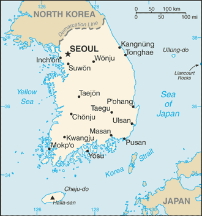
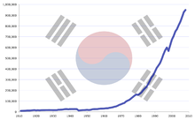

Corea del Sur ocupa la parte sur de la península de Corea, que se extiende unos 1100 km desde el continente
asiático. Esta península montañosa está flanqueada por el mar Amarillo al oeste y el mar del Japón hacia el
este. En el extremo sur se encuentra el estrecho de Corea y el mar de China Oriental. La superficie total del
país asciende a 100 339 km². El territorio nacional se puede dividir en cuatro regiones generales: la región
oriental de montes altos y llanuras costeras estrechas; la región occidental de amplias llanuras costeras,
cuencas fluviales y colinas; la región suroeste con montañas y valles y la región sureste donde predomina la
amplia cuenca del río Nakdong. El relieve es principalmente montañoso, por lo que la mayoría del suelo no es
cultivable. Las tierras bajas, ubicadas principalmente en el oeste y el sureste, constituyen sólo el 30 % del
área total de tierra. Unas tres mil islas, en su mayoría pequeñas y deshabitadas, se encuentran frente a las
costas oeste y sur. Jeju-do se encuentra a unos 100 kilómetros de la costa sur. Es la isla más grande del país,
con un área de 1845 km².

Corea del Sur es un país desarrollado y entre las décadas de 1960 y 1990 contaba con una de las economías de
más rápido crecimiento del mundo. A la rápida transformación en una economía rica e industrializada en este
corto tiempo se le llamó "el milagro del río Han". Esta oleada de crecimiento se logró a través de la
fabricación orientada a la exportación y a una fuerza de trabajo altamente cualificada. En 2009, era el noveno
país con mayores ingresos por sus exportaciones. Como el más grande de los cuatro dragones asiáticos, la
economía surcoreana es la cuarta más grande en Asia y la más grande en el mundo. Es un importante socio
comercial de las economías más grandes del mundo, por ejemplo, es el tercer socio comercial más importante
para China y Japón, el séptimo para Estados Unidos y el octavo para la Unión Europea. Su capital, Seúl,
constantemente está situada entre las diez ciudades financieras y comerciales más importantes para la economía
global y fue nombrada la sexta ciudad económicamente más poderosa del mundo, según la revista Forbes.
El PIB per cápita nacional es de alrededor de US$ 30 000. Como miembro de la OCDE, es clasificado por el
Banco Mundial como una economía de altos ingresos, por el FMI y la CIA como una economía avanzada y como un
mercado desarrollado por el grupo FTSE.